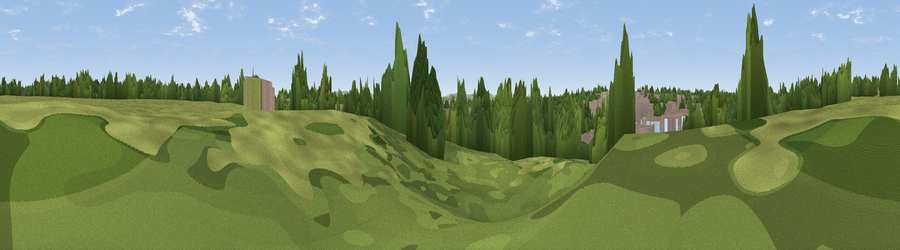

Viewpoint near Walhampton
#43230 in England · top 78% of its area beats it · near WalhamptonThe view, rendered

A 360° render of this exact spot computed from the terrain model, tree cover and land cover — summer colours, afternoon light, calibrated against photographs of famous viewpoints. Real trees, hedges and buildings will differ in detail.
The panorama
Grey silhouette: terrain skyline in each direction (720 bearings, Earth curvature and refraction included). Dashed green: skyline with trees (+15 m) and buildings (+8 m) as obstacles. Blue strip: how far the ground is visible on each bearing.
Where the view opens
Wedge length = distance to the farthest visible ground on that bearing (vegetation-aware). Rings at 10, 25 and 50 km.
What fills the view
33% woodland · 25% built-up · 19% grassland · 17% water · 3% wetland · 1% cropland
Angular shares of the visible panorama (visual magnitude), not map area. Landscape diversity 0.66 (0–1 Shannon).
Key numbers
More beautiful places nearby
The staircase of upgrades: each row has a higher view potential than everything closer. Driving times are estimates from straight-line distance, calibrated against real road routing — check an actual route before setting out.
| Place | Direction | Drive | Score |
|---|---|---|---|
| Sturt Pond bird hide | SW · 6 km | ~13 min | 33.6 |
| Viewpoint near Cranmore | SE · 8 km | ~15 min | 55.1 |
| Viewpoint near Cranmore | SE · 8 km | ~16 min | 60.4 |
| Viewpoint near Middleton | S · 10 km | ~20 min | 78.9 |
| Tennyson Down | S · 11 km | ~20 min | 83.2 |
| Viewpoint near Brook | SSE · 12 km | ~22 min | 84.2 |
| Brook Down | SSE · 12 km | ~23 min | 85.3 |
| Mottistone Down | SSE · 13 km | ~25 min | 87.2 |
50.76163, -1.52981 · source: osm peak · position refined by local search. Computed location — check access rights before visiting.